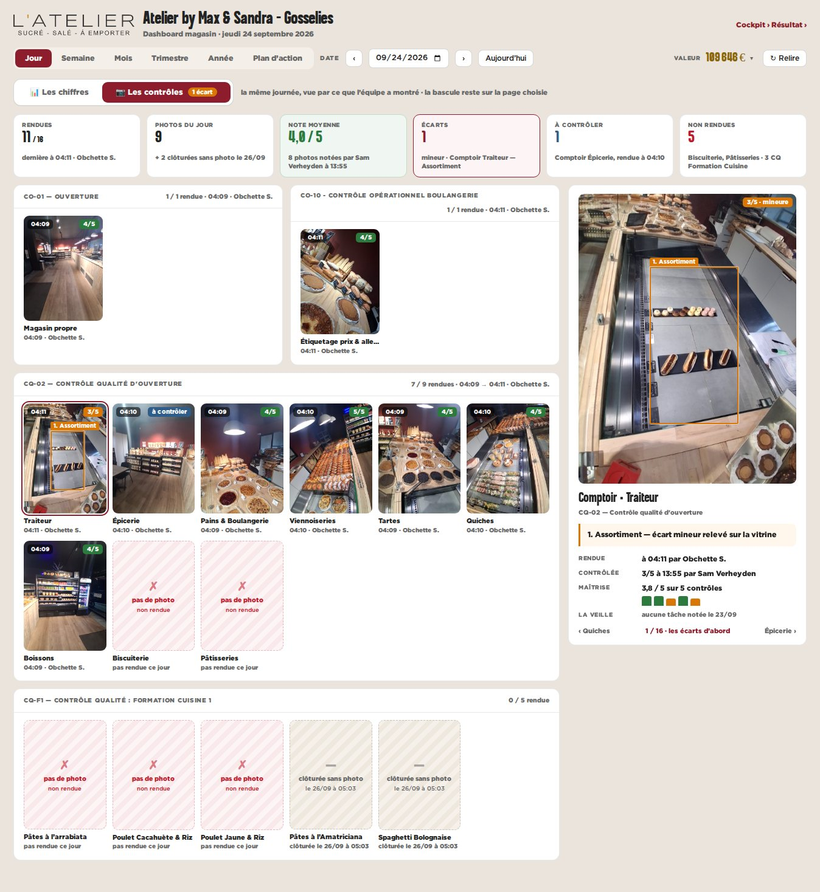
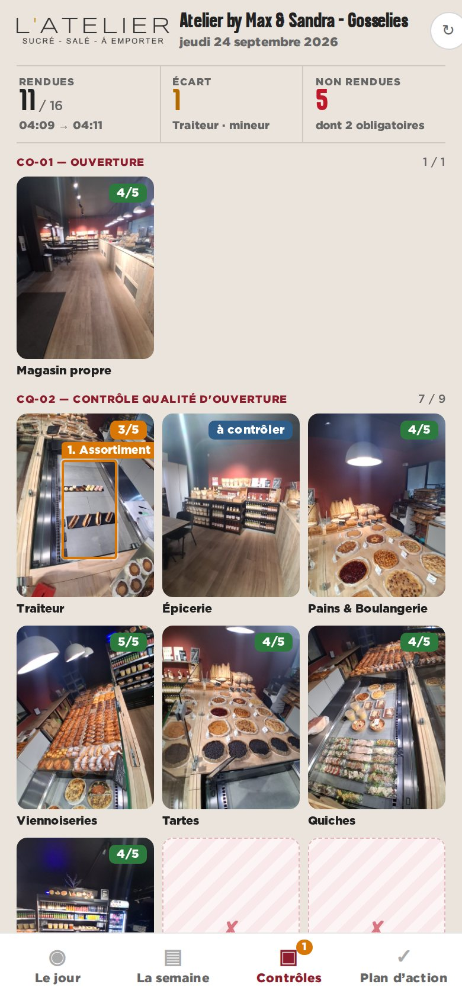

maquette · dashboard magasin · vue Jour · Gosselies, jeudi 24/09/2026 · données réelles du panel
B — Une deuxième page « Les contrôles »
Une bascule Les chiffres | Les contrôles en tête de la vue Jour (au téléphone : un quatrième onglet en bas). La page Contrôles range toutes les photos par checklist, dans l’ordre de la journée ; celle qu’on choisit s’affiche en grand à droite.
Pour
- Tout tient sur un écran, rangé comme l’équipe travaille.
- Place pour le détail : constat, maîtrise, reprise.
- Les chiffres restent sobres ; les contrôles ont leur page.
Contre
- Il faut penser à basculer : rien ne signale un écart côté chiffres (sauf la pastille).
- Une page de plus à tenir.

bureau — la page Contrôles

téléphone — l’onglet Contrôles